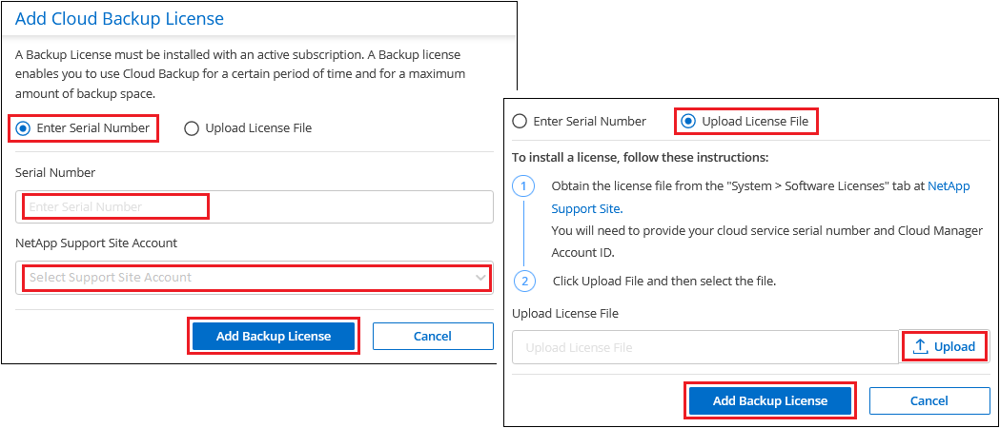

请求文档变更
请求文档变更 在 GitHub 上编辑
在 GitHub 上编辑 提供者指南
提供者指南为 Cloud Backup 设置许可
启用 Cloud Backup Service 后，即可免费试用 30 天的 Cloud Backup 。免费试用版结束后，您需要通过云提供商订阅按需购买（ PAYGO ）或从 NetApp 购买自带许可证（ BYOL ）来购买 Cloud Backup 。
在阅读其他内容之前，请先阅读一些注释：
-
如果您已在云提供商的市场上订阅 Cloud Manager 按需购买（ PAYGO ）订阅，则也会自动订阅 Cloud Backup 。您无需重新订阅。
-
Cloud Backup 自带许可证（ BYOL ）是一种浮动许可证，您可以在与 Cloud Manager 帐户关联的所有系统上使用。
-
将 ONTAP 数据备份到 StorageGRID 时，您需要 BYOL 许可证，但云提供商存储空间不需要任何成本。
使用 Cloud Backup PAYGO 订阅
对于按需购买，您需要为云提供商支付对象存储成本和 NetApp 备份许可成本。使用以下链接从云提供商市场订阅 Cloud Backup ：
通过 AWS 订阅年度合同
AWS Marketplace 提供了两份适用于 Cloud Volumes ONTAP 和内部 ONTAP 系统的年度合同：
-
一份年度合同，用于备份 Cloud Volumes ONTAP 数据和内部 ONTAP 数据。
转至 "AWS Marketplace 页面" 以查看定价详细信息。
如果要使用此选项，请从 Marketplace 页面设置您的订阅，然后再执行 "将订阅与您的 AWS 凭据关联"。请注意，您还需要使用此年度合同订阅为 Cloud Volumes ONTAP 系统付费，因为您只能在 Cloud Manager 中为 AWS 凭据分配一个有效订阅。
-
一种专业包，使您能够使用为期 1 年， 2 年或 3 年的年度合同捆绑 Cloud Volumes ONTAP 和云备份。按 TiB 支付。此选项不允许您备份内部 ONTAP 数据。
转至 "AWS Marketplace 页面" 要查看定价详细信息，请转到 了解有关此许可选项的更多信息。
如果要使用此选项，您可以在创建 Cloud Volumes ONTAP 工作环境时设置年度合同，而 Cloud Manager 会提示您订阅 AWS Marketplace 。
使用 Cloud Backup BYOL 许可证
NetApp 自带许可证的期限为 1 年， 2 年或 3 年。您只需为所保护的数据付费，此费用由要备份的源 ONTAP 卷的逻辑已用容量（ _before_any 的效率）计算得出。此容量也称为前端 TB （前端 TB ）。
BYOL Cloud Backup 许可证是一种浮动许可证，总容量在与您的 Cloud Manager 帐户关联的所有系统之间共享。对于 ONTAP 系统，您可以对计划备份的卷运行 ONTAP 命令 volume show-space -logical-used 来大致估算所需容量。
如果您没有 Cloud Backup BYOL 许可证，请单击 Cloud Manager 右下角的聊天图标购买一个。
或者，如果您已为 Cloud Volumes ONTAP 取消分配了基于节点的许可证，而您不会使用该许可证，则可以将其转换为具有相同美元等价性和相同到期日期的 Cloud Backup 许可证。 "有关详细信息，请访问此处"。
您可以使用 Cloud Manager 中的数字电子钱包页面管理 Cloud Backup 的 BYOL 许可证。您可以添加新许可证并更新现有许可证。
获取 Cloud Backup 许可证文件
购买 Cloud Backup 许可证后，您可以通过输入 Cloud Backup 序列号和 NSS 帐户或上传 NLF 许可证文件在 Cloud Manager 中激活此许可证。以下步骤显示了如果您计划使用此方法，如何获取 NLF 许可证文件。
如果您在无法访问 Internet 的内部站点上运行 Cloud Backup ，这意味着您已在脱机内部站点的主机上部署 Cloud Manager Connector ，则需要从已连接 Internet 的系统获取许可证文件。使用序列号和 NSS 帐户激活许可证不可用于脱机（非公开站点）安装。
-
登录到 "NetApp 支持站点" 然后单击 * 系统 > 软件许可证 * 。
-
输入 Cloud Backup 许可证序列号。

-
在 * 许可证密钥 * 列中，单击 * 获取 NetApp 许可证文件 * 。
-
输入您的 Cloud Manager 帐户 ID （在支持站点上称为租户 ID ），然后单击 * 提交 * 下载许可证文件。

您可以通过从 Cloud Manager 顶部选择 * 帐户 * 下拉列表，然后单击您帐户旁边的 * 管理帐户 * 来查找 Cloud Manager 帐户 ID 。您的帐户 ID 位于概述选项卡中。
将 Cloud Backup BYOL 许可证添加到您的帐户
为 NetApp 帐户购买 Cloud Backup 许可证后，您需要将此许可证添加到 Cloud Manager 中。
-
单击 * 所有服务 > 数字电子钱包 > 数据服务许可证 * 。
-
单击 * 添加许可证 * 。
-
在 Add License 对话框中，输入许可证信息并单击 * 添加许可证 * ：
-
如果您有备份许可证序列号并且知道您的 NSS 帐户，请选择 * 输入序列号 * 选项并输入该信息。
如果下拉列表中没有您的 NetApp 支持站点帐户， "将 NSS 帐户添加到 Cloud Manager"。
-
如果您有备份许可证文件（安装在非公开站点时需要），请选择 * 上传许可证文件 * 选项，然后按照提示附加该文件。

-
Cloud Manager 会添加许可证，以便 Cloud Backup 处于活动状态。
更新 Cloud Backup BYOL 许可证
如果您的许可期限即将到期，或者您的许可容量即将达到限制，您将在备份 UI 中收到通知。此状态也会显示在 " 数字电子钱包 " 页面和中 "通知"。

您可以在 Cloud Backup 许可证到期之前对其进行更新，以便备份和还原数据的能力不会中断。
-
单击 Cloud Manager 右下角的聊天图标或联系支持部门，请求延长您的期限或为特定序列号申请 Cloud Backup 许可证的额外容量。
在您为许可证付费并将其注册到 NetApp 支持站点后， Cloud Manager 会自动在数字电子邮件中更新许可证，并且数据服务许可证页面将在 5 到 10 分钟内反映此更改。
-
如果 Cloud Manager 无法自动更新许可证（例如，安装在非公开站点时），则需要手动上传许可证文件。
-
您可以 从 NetApp 支持站点获取许可证文件。
-
在数字电子邮件页面 Data Services Licenses 选项卡上，单击
 对于要更新的服务序列号，请单击 * 更新许可证 * 。
对于要更新的服务序列号，请单击 * 更新许可证 * 。
-
在 Update License 页面中，上传许可证文件并单击 * 更新许可证 * 。
-
Cloud Manager 会更新许可证，以便 Cloud Backup 继续处于活动状态。
BYOL 许可证注意事项
使用 Cloud Backup BYOL 许可证时，如果要备份的所有数据的大小接近容量限制或接近许可证到期日期， Cloud Manager 将在用户界面中显示警告。您会收到以下警告：
-
备份达到许可容量的 80% 时，再次达到限制时
-
许可证到期前 30 天，许可证到期后再次
如果您看到这些警告，请使用 Cloud Manager 界面右下角的聊天图标续订许可证。
许可证过期后，可能会发生以下两种情况：
-
如果您使用的帐户具有 Marketplace 帐户，则备份服务将继续运行，但您将转移到 PAYGO 许可模式。您需要为备份所使用的容量付费。
-
如果您的帐户没有 Marketplace 帐户，备份服务将继续运行，但您仍会看到警告。
续订 BYOL 订阅后， Cloud Manager 会自动更新许可证。如果 Cloud Manager 无法通过安全 Internet 连接访问此许可证文件（例如，安装在非公开站点时），您可以自行获取此文件并手动将其上传到 Cloud Manager 。有关说明，请参见 "如何更新 Cloud Backup 许可证"。
已转移到 PAYGO 许可证的系统将自动返回到 BYOL 许可证。如果系统在未获得许可证的情况下运行，则会停止显示警告，并因许可证过期期间发生的备份活动而收取费用。